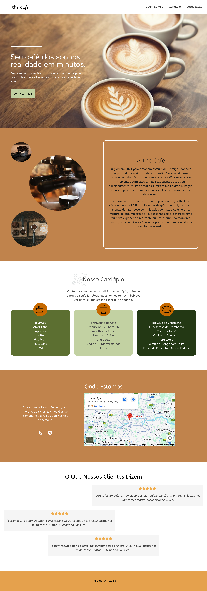

01
projeto pessoal · estudo
WEB DESIGN · UI · WORDPRESS
cafeteria ✦
um projeto que começou
com uma música.
com uma música.

Primeiro projeto que fiz puramente pra estudo, iniciei fazendo todo o design no Figma pra conseguir entender que direção eu iria seguir, depois fui fazer o código à mão até apagar tudo de código e decidir testar usando o WordPress e Elementor.
Figma → WordPress → Elementor